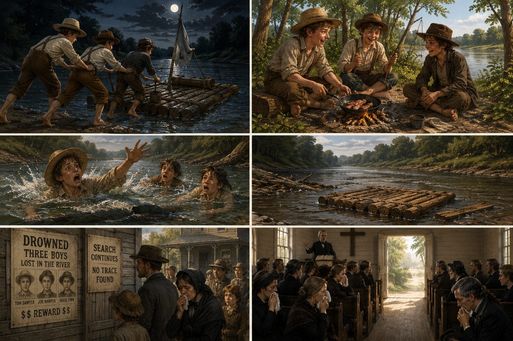

Their Own Funeral · The Day Tom Walked Back from the Dead
Story + Pre-reading + Discussion5.0 Before you read · What do you see?
![The front of a small white wooden church on a Sunday morning. The big doors at the back of the church are wide open. Inside, every villager sits in the wooden pews, women holding white handkerchiefs, men with their hats on their knees. The minister is at the pulpit reading from the Bible. Sunlight pours through the open doorway and cuts across the empty central aisle. Three small barefoot boys stand in the doorway: Tom Sawyer in front, Joe Harper beside him, Huckleberry Finn half-hidden behind. River mud still on their trousers. The whole church has turned to look at them.](assets/img/act5-funeral-aisle.png)
5.1 Before you read · Match the words
Click one word on the left, then its match on the right. Correct pair locks green. Wrong pair shakes red — try again.
English
Перевод
5.2 Before you read · Guess true or false
Read each statement and guess. You can't be wrong here. After you read the story, come back and check.
🔹 STORY · Tom Sawyer — Their Own Funeral

After the night at the graveyard, the secret was too heavy to carry. Tom did not sleep well, and even his old games stopped working. So when Joe Harper came one afternoon with the same unhappy face — punished at home, tired of being a child watched all day — Tom and Joe and Huck made a plan together. They would run away. They would become pirates.
That night, in the dark, they pushed a small wooden raft into the wide Mississippi and floated down to Jackson's Island, three miles below the town. The island was thick with trees, full of birds and frogs. They had bacon, a fishing line, and a stolen frying pan. For two days it felt like freedom.
But on the third day, something began to bother Tom. Not hunger — something quieter. He kept thinking about Aunt Polly. About her face when she would hear the news. About the empty chair at supper. About the bed she had made for him that morning, expecting him.
One night, when Joe and Huck were asleep around the fire, Tom slipped away. He found a log, paddled across the dark water, and walked silently through the village to his own house. The window was open. Aunt Polly was sitting at the table, Sid beside her, the candle low. She was talking, half to him, half to herself.
One night, when Joe and Huck were asleep around the fire, Tom slipped away. He found a log, paddled across the dark water, and walked silently through the village to his own house. The window was open. Aunt Polly was sitting at the table, Sid beside her, the candle low. She was talking, half to him, half to herself.
"He warn't bad, you know — only mischievous. Only thoughtless… and the kindest boy that ever was."And then she put her face in her hands and cried. Tom stood frozen in the dark grass, listening. He had never heard anyone cry like that before. It was not the cry of someone angry. It was the cry of someone who had loved him all along — and only now, when she believed she had lost him, could she say it out loud.
For a long minute, Tom almost ran inside to say "I'm here, aunty, I'm not dead." But something stopped him. A different idea — a terrible, beautiful idea — was forming in his head. He turned and slipped back through the grass to the river.
Back on the island, he told Joe and Huck what he had seen — and what they would do.
The town believed the three boys had drowned. The men had searched the river for days. They had found pieces of the raft. They had stopped looking. The funeral was set for Sunday morning.
On Sunday the small white church was full. Every villager came. Aunt Polly sat in the front pew, her face grey, holding Sid's hand. Mrs. Harper sat beside her, holding nothing. The minister climbed into the pulpit and began the sermon. He spoke softly about the three boys. He said things about them that no one had ever said while they were alive — that they were good, that they were promising, that they were missed. The women cried. The men looked at the floor.
And then — exactly at the moment when the church bell tolled for the final time — the big back doors of the church creaked open. Sunlight poured into the centre aisle. The minister looked up. The congregation turned.
In the open doorway stood three small barefoot figures: Tom Sawyer, Joe Harper, and behind them, half-hidden, Huckleberry Finn. River mud was still on their clothes. They had walked up the aisle of their own funeral.
For one second there was no sound at all. Then a wave of crying and laughing and shouting rose at once. Aunt Polly seized Tom and held him so tight he could not breathe. Mrs. Harper kissed Joe. People reached out to touch Huck — even Huck, who had never been touched before. The minister gave up the sermon and began the old hymn "Old Hundredth", and the whole congregation sang it as loud as they had ever sung anything in their lives.
Tom stood there in his aunt's arms, the song shaking the wooden walls of the church. He had got what he came for. Every eye in the town was on him. Every heart was open to him. He had walked back from the dead, in front of everyone, and he was a king for one perfect morning.
But late that night, lying in his own bed — the bed Aunt Polly had kept made for him — Tom remembered the sound of her crying through the window. And he understood, for the first time, that the price of his glorious return had been her three days of real grief. He had let her break her own heart to make his entrance more beautiful.
That was the day Tom Sawyer learned that some shows cost more than the audience can see.
5.3 Read and choose · True or False
5.4 Choose the correct answer
5.5 Put the events in the correct order
5.6 Complete the sentences
5.7 Discuss the questions
5.8 Mini debate
Side A · A brilliant moment
It is one of the most memorable scenes in American literature. Tom turned grief into joy. Every face in the church was lifted in one second. That kind of theatre is rare — and beautiful.
Side B · He paid with someone else's pain
The price of his perfect entrance was three days of real grief for his aunt and the Harpers. He stood in the dark grass and chose his own show over her tears. That is not bravery — that is using people.
5.9 Role play · later that evening
Partner A · Tom (at home, evening)
The whole village has gone home. The candle is low. Aunt Polly is sitting at the table, not looking at you. You know she knows you heard her cry. What do you say? Try to be honest. Use phrases like "Aunty, I heard you that night…" / "I should have come in. I didn't because…"
Partner B · Aunt Polly
You are relieved, you are grateful, and you are also a little broken. You loved him through three days of believing him dead. You don't want to punish him — but you don't want to pretend it didn't hurt either. Use phrases like "I am glad you came back. But…" / "You don't know what those three days were like…"
Together: try the scene twice. First — gentle. Second — honest. Compare which version feels truer.

![A bright summer afternoon at the wide stone mouth of McDougal's Cave in 1840s Missouri. A group of village children in old-fashioned Sunday clothes stand at the entrance, laughing, holding small wooden torches with orange flames. In the front of the group, Tom Sawyer holds Becky Thatcher's hand — she has long braids and a blue dress. The cave opening behind them is a huge dark stone arch, cool black air pouring out of it. Green trees, a picnic basket on the grass, a wooden ladder leaning against a rock. Warm cinematic afternoon light on the outside; total darkness inside the arch. Norman Rockwell meets Mark Twain, painterly, 16:9 wide composition.](assets/img/act7-cave-mouth.png)
![Deep inside McDougal's Cave. A narrow, wet stone tunnel with grey walls that all look the same. In the centre, Tom Sawyer is on his knees, one hand pressed to the wall, the other holding a thin piece of kite string that stretches back into the dark behind him. His candle in a jam-jar throws a small circle of golden light. Far in the background of the same tunnel, a much smaller and colder light — a single lantern held by the silhouette of Injun Joe, a tall man in a dark shirt with a red bandana, walking slowly away. Tom is holding his breath. Deep painterly shadows, cold blue-black tones on the walls, warm amber near Tom, single cold pinpoint of Injun Joe's lantern. Cinematic, 16:9.](assets/img/act7-tunnel-dark.png)